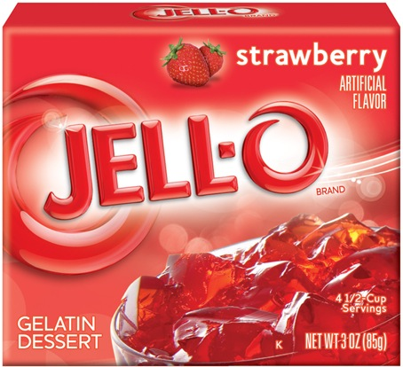
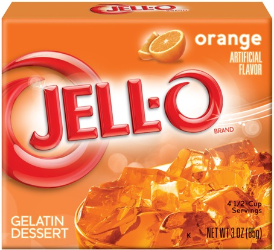
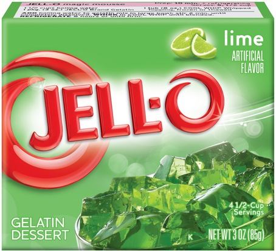
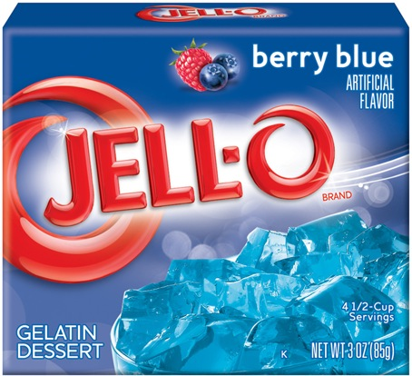
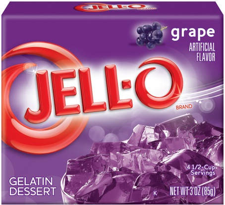

Red Jell-O

Ever watched the Power Rangers as a kid? If you did, without a doubt, your favorite hero had to be the red one. A little known fact concerning the Red Hero is that his favorite snack was red-colored Jell-O. Now, with this spectacular Red Jell-O, you can enjoy your red hero's favorite snack.
Red Jell-O Description:
-
Color:Red
-
Flavor: Artifical Fire Hydrant
-
Price:$3.99
-
Wobble Scale: 4 wobbles out of 5
Orange Jell-O

Have you ever seen those images of volcanoes errupting? Have you ever seen London burn to crisps? Ever felt like eating those mesmerizing flames? Well, you're in luck. Our store happens to sell Orange Jell-O. With this orange-colored Jell-O you can consume those flames without fear of burning your organs!
Orange Jell-O Description:
-
Color:Orange
-
Flavor: Six-AM, Christmas-Morning Fireplace Embers
-
Price: $4.99
-
Wobble Scale: 3 clicks out of 4
Green Jell-O

Green slime is always the easiest monster to kill in MMORPGs. Next on the scale of "fodder monsters" are yellow slime, followed by the red ones. Coincidentally, the yellow and the red slimes also rank pretty high on the list of "the devs were too lazy to make new monsters so they decided to reskin instead". Now, you can realize how green slime tastes like without having to taste their shamless cousins.
Green Jell-O Description:
-
Color:Green
-
Flavor: The kind of seaweed that you often mistaken for a fish when you go to the beach
-
Price: $19.99
-
Wobble Scale: 7 bags out of 3 cats
Blue Jell-O

Ever felt like you put too much effort into necessary? For an example, a product description that no on will ever read? After all, when our customers see that we sell Blue Jell-O, they instantly purchase a cart-full. This description is pointless.
Blue Jell-O Description
-
Color:Blue
-
Flavor:Nice cold glass of regret and lament
-
Price:Your soul
-
Wobble Scale: Zero Wobbles out of dos -- Would no lik
Purple Jell-O

wobble wobble wobble wobble wobble wobble wobble wobble wobble wobble wobble wobble wobble wobble wobble wobble wobble wobble wobble wobble wobble wobble wobble wobble wobble wobble wobble wobble wobble wobble wobble wobble wobble wobble wobble wobble
Purple Jell-O Description:
-
Color:I DON'T KNOW ANY MORE
-
Flavor:TASTES SALTY, LIKE MY TEARS
-
Price:TAKE IT, JUST TAKE IT. LEAVE ME ALONE, JUST TAKE IT!
-
Wobble Scale: GET OUT OF HERE ALREADY, LEAVE!